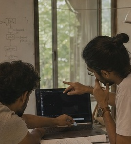
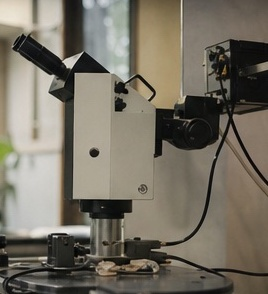

Not spectators.
Practitioners.
Bring a difficult physical-world problem, evidence of sustained work, and a method you are ready to share.
Turn technical breakthroughs into deep-tech companies.
A one-month deep-tech residency for 16 scientists, engineers, researchers, and builders working across biology, physics, chemistry, nanomaterials, particles, space science, and scientific infrastructure.
India has exceptional technical talent. The path from research to company formation remains fragmented.


Variance House brings sixteen researchers, scientists, engineers, and builders into one villa for thirty uninterrupted days. They arrive with independent work. They leave with experiments altered by productive interference.
What foundational tool would you build if the missing expertise lived in the next room?
The objective is not a month of activity. It is a stronger scientific commons: documented methods, shared tools, prototypes, collaborations, and infrastructure that continue after the house closes.
Conversations continue over meals. Instruments move between tables. Someone is always awake enough to ask the useful question.
A residential environment for practitioners with evidence of sustained work and a method ready to be shared.
Bring a difficult physical-world problem, evidence of sustained work, and a method you are ready to share.
Working through evidence, experiments, and unresolved questions.
Turning physical principles into tools, instruments, and systems.
With unusual technical depth and a body of self-directed work.
Pursuing important work before an institution has made room for it.
Already committed to a difficult problem—not merely looking to attend.
Variance House brings scientists, engineers, researchers, and technical builders into one shared Bangalore residence for a month of experiments, collaboration, and difficult physical-world work.
CITY CONTEXT / PRECISE SITE WITHHELD
Spend thirty days living and building with fifteen other people working at the frontiers of science and engineering.